(2007-01-16 16:04:49)
********************
[匿名] 空读2007-01-16
15:51:19
当然，政治也是这五浊恶世中最恶浊之处，那些在政治在失败者，是没资格谈论什么自由、解脱的；淫乱也是这五浊恶世中最恶浊之处，在淫乱中所谓坐怀不乱者是无所谓自由、解脱的。出于污泥而不染者，不过是自渎的废物，污泥者又何曾污？染又何妨？真正的自由、解脱，是自由于不自由、解脱于不解脱，入于污泥而污之，出于污泥而污之，无污泥可出而无处污泥，无污泥可入而无处不污泥。
==================
刚学完上一篇,与以前之感触有所共鸣,万法皆空,佛教为何搞许多清规戒律,形式的东西,当然,搞也是空,不搞也是空,空也是空,不空也是空.恶也是空,善也是空,浊也是空,清也是空,怎么做都没有错,错又何妨,有妨又如何.
"夫圣人者，不凝滞于物，而能与世推移。举世混浊，何不随其流而扬其波？众人皆醉，何不哺其糟而啜其醨."乐在其中,亦不亦乐乎.
===
正因为万法皆空，才有种种戒律；以空为空，生死沉浮，岂有出期！
(2007-01-16 16:10:05)
********************
[匿名] 无知 2007-01-16 16:06:51
缠mm，找第三类买点要不要除权？
===
无所谓，但如果你选好不复权就一直用不复权的，别换来换去。
(2007-01-16 16:12:59)
********************
[匿名] 我的2006 2007-01-16 16:04:07
弱弱的问一句:缠妹妹,我观注了你的博客很久了,但是我却总是看不懂你的理论,能不能系统的给我们讲讲
===
一直很系统，你一章章看下来，特别从中枢开始着手，自然就明白了。目前这个说法是最准确、最精练的。仔细把其中的关系搞清楚。
(2007-01-16 16:15:20)
********************
[匿名] 插班生 2007-01-16 15:58:26
搬过来的.
1/15目前600021在周线上构成第三类买点.
请楼主批阅.谢谢!
===
（注:缠主前期日3买级别是乱的，就是按照前期级别也该叫做30分3买，即后期递归5分3买）
这个不准确，为什么？因为如果是日线上的，那1月5日就构成了，因为只需要一个30分钟级别的回试不回原来日线中枢就可以了。但如果是周线上的，那第三类买点必须是日线级别的回抽，也就是有三段30分钟上的走势类型构成，目前只有一段，现在走第二段。第三段无非就几种构成的可能：三角形、奔走型、之字型、平台型。
中线该股问题不大，但站在短线角度，最快速的就是30分钟回抽所对应的日线上的第三类买点。例如对该股，1月5日的第三类买点介入后，在5分钟发现背驰后离开，然后就去换另外的日线第三类买点的股票，这样资金利用率的高了。当然，如果没有这种快速切换的熟练，就慢慢来，把操作的级别放大点。
一般按日线第三类买点进入的，只要你资金不太大，而且判断不出问题，离开也及时，而且够勤奋，每天都选好下一个可介入的品种，那么，一月内至少可以操作7、8次，一月翻倍并不是太难的事情，当然，前提是你的资金不能太大。
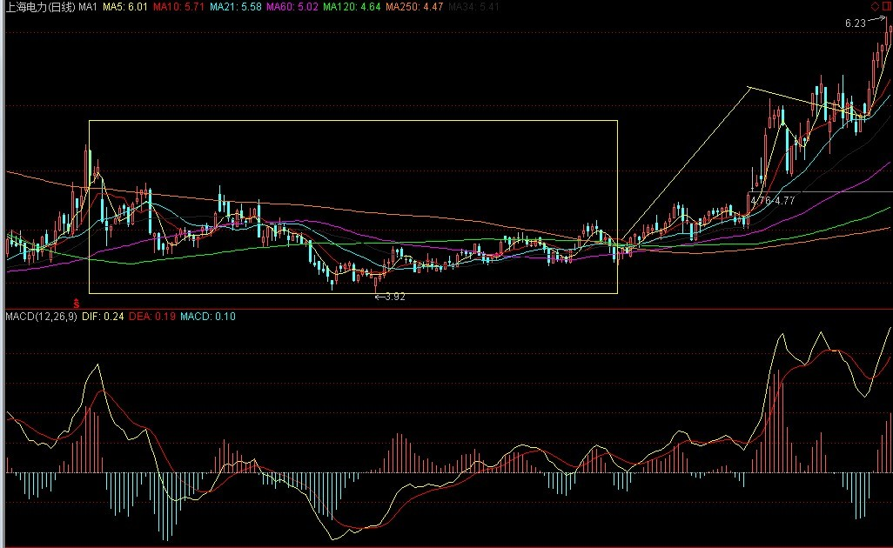
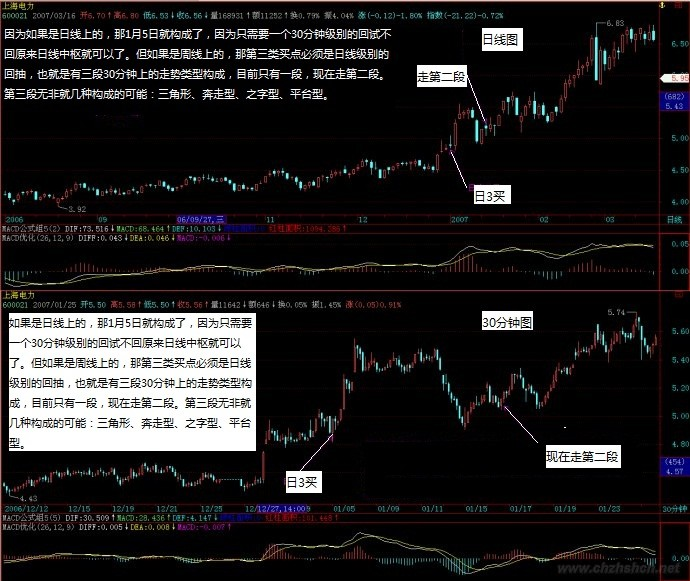
(2007-01-16 16:28:44)
********************
[匿名] 空读 2007-01-16
16:26:39
戒律不亦空乎,不亦是以空为空,又如何出呢,生死沉浮,又往哪里出呢
====
只知道空为空，不知空不空，又岂知空？自古以来，得一空字而休去者，如过江之鲫，可怜可叹。先把空字放下，将有担起来。
(2007-01-16 16:32:55)
********************
[匿名]新手 2007-01-16 16:31:29
你好，我看了你很多文章，我是第一次炒股，照你说的，在9。7买进了000900，可不怎么涨，能帮我看看吗？谢
===
现在已经11元多了？关键不是涨了多少，而是你是否按规程操作了。你看现在你只有15%的涨幅，明天拉起来可能就一下30%了，持有要有耐心，除非卖点出现，否则不能乱动。但一但卖点出现，就必须离开。
你现在需要思考的不是庄家干什么去了，而是你是在什么级别上操作的，现在该级别出现卖点没有。如果你希望快速一点，而且你的人反应也比较快，那完全可以按小一点的级别操作。
注意，市场考验的是长期的赢利能力，而不是一次爆发的能力，关键是长期有效的交易策略。买入时要把各种情况想好，持有要坚决，卖更要坚决，这才能逐步提高。
是你炒股票，不是股票炒你，先从自己下手。
(2007-01-16 16:39:52)
********************
[匿名] 牛牛 2007-01-16 16:41:17
一般按日线第三类买点进入的，只要你资金不太大，而且判断不出问题，离开也及时，而且够勤奋，每天都选好下一个可介入的品种，那么，一月内至少可以操作7、8次，一月翻倍并不是太难的事情，当然，前提是你的资金不能太大。
请问缠姐，这样的操作模式是否以5分钟为操作级别，选股看日线买点，进出用5分钟买卖点吗？
===
以日线的第三类买点。要找这个买点，就看一个30分钟的回抽，而该回抽低点，就看5分钟的背弛。必须三个级别共同来才可以。
(2007-01-16 16:44:56)
********************
[匿名] 空读2007-01-16
16:42:51
无名天地之始;有名万物之母。故常无欲以观其妙;常有欲以观其徼。此两者同出而异名.
有是什么?空即不空,空即是有,不知如何处之
===
以无见之妄文而论禅宗，何有出期？天地，尔心一尘，万物，尔眼一翳，鬼窟中活计，何有出期！
(2007-01-16 16:49:06)
********************
[匿名] 摄影之友 2007-01-16
16:42:12
谢谢博主....我记住的....药会一直在手...... 那是你给我的最珍贵的礼物!~~~
博主,中枢产生的意义,可以再讲讲吗..我还是有些晕噢...
象今天的药.五分钟药上我看到了一个中枢形成了..那它的意义是什么呐??
===
这个以后会说到的，现在最要紧的是把第三类买点搞清楚，然后实践中不断提高，现在这种机会层出不穷，这么难得的实践机会，要把握好。
(2007-01-16 16:50:50)
********************
[匿名] 新年好 2007-01-16
16:45:41
缠姐，能不能回答一下我的问题啊，很迷茫啊。
如下：
2007-01-15 21:48:02
600085日线上的1,2,3类买点分别是2006/11/14,12/11,12/29.对吗？
===缠姐的回答
不对，在日线上，这段时间没有第一、二类的买点，30分钟上当然是有的。不过12月28日那一周却是一个精确的周线上的第三类买点。这个日线上的次级别回抽有点特殊，形成一种奔走行的走势，就是B段的上冲比较厉害，C段的回拉只是稍微跌破A段的高点。这种走势以后的个股一般都会出现快速上扬。
========我的问题
请问缠姐，你这里所说的A，B，C分别是那三段？本来以为是A段:12.11-12.20,B段:12.21-12.28,C段:12.29-2007.01.05可好像跟你说不太一样，我说得B段明显不是上冲。请缠姐告知分别指的那三段？如果理解了这个，那000600后来的急拉应该跟这是一样的道理的。
===
12月4到28号，三段一目了然。注意，回调形成的中枢一定是下、上、下方式的，当然，这里的下、上、下，可以有一段是以盘整的平走替代。
(2007-01-16 16:53:57)
********************
[匿名] 牛牛 2007-01-16 16:53:41
昨日用缠姐教的第三类买点在6.64买入600196，今日7.36卖出原因是30分钟出现macd背离，且量价也背离，但后市又拉起，我的这次操作有什么问题吗？请缠姐指教
===
首先该股在30分钟上并没有什么背弛，背弛需要两段趋势的比较，而不是单纯看MACD红柱子短了。本次回调只是一个次级别背弛造成的，但不是30分钟级别的。因此，站在30分钟的级别上，回跌后就要回补回来，然后等待30分钟真正的背弛出现。一般，如果你判断不太熟悉，只会MACD，那么如果MACD在高处形成双头下来，在0轴附近会有一个再向上的过程，因为那双头，一般是低级别背弛造成的，而真正的背弛，一般都要先回抽0轴，然后再上造成的。
其次，该股并不构成一个精确的三类买点，因为有所重叠。反而是去年11月在月线上有一个精确的第二类买点，目前的上扬与高买点有关。
要对图形进行精确的分析，这需要不断磨练的，慢慢来，这是正确的道理。
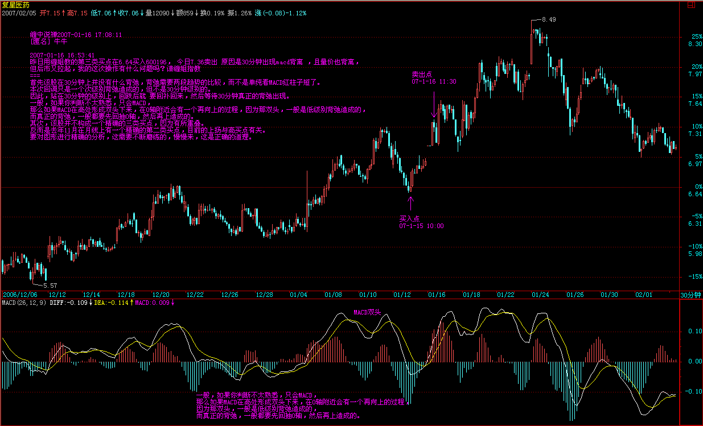
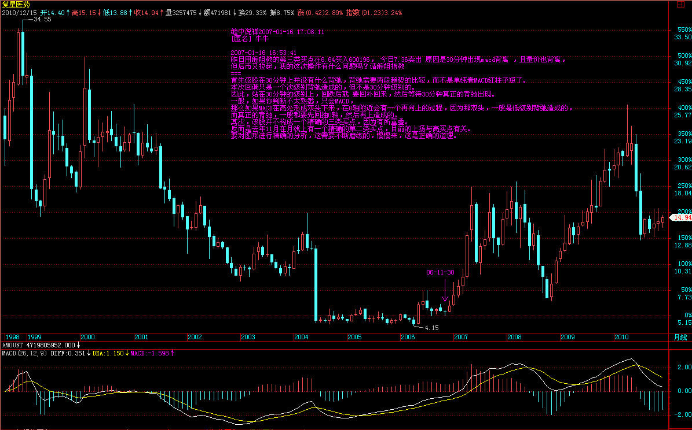
(2007-01-16 17:08:11)
********************
[匿名] 中间体2007-01-16
17:06:33
你比如说, 刚刚你讲到的600021, 1月五号出现的第三类日K线买点, 从五分钟K线看,1月4号就发生了5分钟K线的背驰.是卖点, 何以再能在5号买它??
===
如果是1分钟图上，早上有卖点，下午就会有买点。为什么不可以在5分钟图上，4号有卖点，5号就有买点，关键是这个买点构成的是日线上的第三类买点。
买点与卖点出现的频率和级别有关，如果是年线，估计人的一生最多就见一个股票的两个第一类买点。
(2007-01-16 17:12:57)
********************
先下，有问题放下，晚上再说，再见。
(2007-01-16 17:13:25)
********************
[匿名] 水房姑娘 2007-01-16 17:14:49
缠Ｍ能否分析一下短途铁路601333庄家的意图。
==
临走前回答一下，这是一个错误的思维方式：首先，这种大盘股票，一般来说并不一定有一个单独的庄家，里面打乱仗的机会更大，其次，庄家就算有意图，能否实现还是个问题，如果碰到像本ID这样的人，那庄家就倒八辈子的霉了。
正确的思路，只看走势本身，走势是各种势力综合的结果，这才是唯一可以依据的东西，目前该股正在一个大的中枢里运行，等待再次放量的时机。操作上，就看下次放量时是否能有效突破，如果走出上攻走势，就看30分钟等低级别的图，等待卖点的出现，前提是你是按日线级别操作的。
再见。
(2007-01-16 17:20:41)
********************
[匿名] 牛牛 2007-01-16 17:24:18
真心地感谢缠姐，自从学习了缠姐的理论后，我彻底改掉了追价的恶习，这一个多月的业绩是去年一年的总和。
还有几个问题请教缠姐：
1。现在的普涨行情，很多股出现了第三买点后等发现已经涨高了，是放弃，还是找次级别的一二买点进入呢，如何应对。
2。我时间比较多，资金量不是特别大，缠姐建议我用什么样的级别比较好呢
谢谢缠姐了！！！
===
如果你手头的股票在一个良好的上涨趋势中，就一定要坚决持有，有些股票开始走得慢，但越走越快，不拿着，扔了换其他股票，一来要忍受刚进去时震荡产生的亏损，二来一旦扔掉的涨得更好，心里影响就更大了。
以前本ID不是说过一个大叔，3块多让买的北辰，4块不到就扔了，给本ID一顿数落。当时说他去年主要是3元多买了一只股票，所以还挣了点钱。他和上市公司十分熟悉，最后反而是让上市公司的人给洗出来了，10块钱全没了。到今天刚好一个月多几天，今天一个涨停，快14了，后悔有用吗？
卖点不出来就别卖了，股票只要中线启动，其升势就不会很简单的改变。
至于新进股票，最好还是按规程来，这是一个习惯问题，如果按次级别进入，就要按次级别的规程来。一旦上涨趋势确认，就一定要持有到卖点出现为止。
一个好习惯，比短线的蝇头小利重要多了。因为无论你能挣多少钱，一个坏毛病就足以化为乌有。
(2007-01-16 21:10:31)
********************
[匿名] 外科医生 2007-01-16
21:02:26
请问禅妹：
有时候没有出现任何级别的背迟，也就是没有出现卖点，但是股价却出现转折，不断下跌，这样的情况怎么处理。
多谢
===
这种情况根本不会发生，只是没找到相应级别的转折而已。所以要对市场的走势不断观察，才有机会提高。
(2007-01-16 21:13:18)
********************
[匿名] 无知 2007-01-16
20:50:10
今天深圳创新高而上海没有！是否算是背离了？？
===
目前上海指数是一个大盘指数，所以如果只是一两天出现这种情况，问题还不算大，但如果长时间出现，那就问题大了。所以本周上海必须创新高，否则调整级别要继续加大。
(2007-01-16 21:16:58)
********************
[匿名] 新菜鸟2007-01-16
18:20:18
请问缠姑娘：
1：600028今天上午收盘时 5分钟和30分钟是不是出现了第一类买点。按走势完美它是不是应该探10。20，然后再？怎么操作啊，才看您的文章，还不熟练
===
1分钟图上在上午收盘前是一个第一类买点，其他图上倒没有。他的走势，基本就是工行的一个翻版，比工行滞后点。
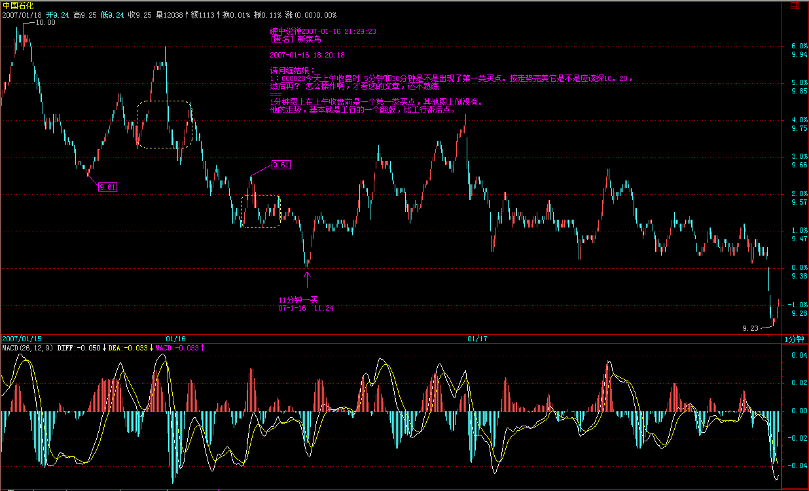
2：您说药是去年的酒，钢铁是去年的有色，我觉得石油是去年的银行。因为他有战略意义。我是瞎猜的，所以今天本来要割肉的。没有割，在我觉得像是5分钟的买点上补了一点。
我是菜鸟，但我希望通过这里的学习，看能不能变成个大鹏鸟，呵呵，大家别笑，帮帮我哦
====
石化中线问题不太大，短线在10元上下还要折腾。
股票要注意节奏，前段是超级大盘的天下，现在是二、三线的天下，不能把节奏弄错了，如果弄错了，就等吧，找机会把节奏调回来。一般最好别砍仓，牛市砍仓，太不吉利了。而且很容易把心情弄坏，节奏越来越错。最好就等等，反正板块会轮动，轮到他时，如果走不出上涨的延伸，就找机会出来。
一大堆低价股票在向你招手，有必要追高吗？ 等待的时候，好好反省，以后一定要把握节奏。
(2007-01-16 21:29:23)
********************
[匿名] ccy2007-01-16 21:08:05
报告一下，学习缠女的理论有两月了，市值２.５w增至３.６w,十分感谢，今天来冒个泡
===
继续努力，牛市结束前，至少把这变成100万，也就再来30倍，5次翻番就可以了。 本ID和你设计一下，第一波成分股的行情中，把它变成10万，应该是难度不大的。 第二波的成长股行情，如果弄得好，100万的任务就完成了。 还有第三波最疯狂的重组行情，你的目标应该是1000万了。
(2007-01-16 21:34:35)
********************
[匿名] 手中无股 2007-01-16 21:34:19
lz,对“第三类买卖点定理”中的“……，其低点不升破ZD，则构成第三类卖点。”，应为“其高点不升破ZD，则构成第三类卖点。”，不知对不对？
===
谢谢，是高点，写的时候是把买点的复制过去改几个字，应该是改漏了。现在去改回来。
(2007-01-16 21:36:24)
********************
[匿名] 在路上 2007-01-16
21:18:36
缠中说禅 2007-01-16 15:37:18
各位注意了
已经N次说过，现在是补涨的天下，二线、特别是低价股横行，选好第三类买点，你会忙得不亦乐乎。本ID教你的是找吃的本事，而不是光把饭给你，各位看看今天涨停的股票，有多少是从第三类买点启动的，就上海的，而且只说低价的，随便说几个： 600608、600555、600784、600684、600300、600829、600587、600820、600884、
各位好好研究一下，就用第三类买点，目前就可以找到足够多的饭吃。自己找到的才是真本事。关键是把这技术练好。
==============
缠姐的这几个例子举的好,600820,600829这两个我腾不出手来搞,但身边的朋友们可就赚大了,看到缠姐提到,自信又增加了,证明学的方向还是对的,至少自己看到的股票被提到了.
=================
本ID的理论就如同欧几里德几何，只要学会了，任何人应用都是一样的，所以该尊重的是理论本身，而不是本ID，本ID也不能违背该理论，就像牛顿发现了万有引力，但依然在万有引力之中。所以有信心的是理论本身，而对理论的信心来自对其逻辑结构的充分理解，进而在实践中不断校对其理解，这样才真的变成自己的。
注意，这几只股票都走出第三类买点后的上扬了，没必要去追高，还有更多的刚在第三类买点的股票再招手，自己去找去。
(2007-01-16 21:43:35)
********************
[匿名] 淡定 2007-01-16 21:36:38
请教楼主两个问题：1）000001在1月11日出了日线级别的第三类买点？2）600050 1月11日出了第一类卖点，目前等第三类买点的出现对吗？多谢了
==========
还要抓紧学习，所有买点都肯定是调整时出现的，怎么会000001的1月11日是第三类买点？发展现在的买点，基本都只能在30分钟以上才有了，除非出现大的调整。
注意，这样并不会丢掉任何一段有价值的行情，在行情的延伸段里，一个30分钟的买点到卖点所产生的利润，比日线启动初期要大多了。
600050的1月11日不是什么第一类卖点。反而是4日有一个5分钟背弛引发的小级别卖点。
联通的中线潜力是不小的，且不说什么3G，一个通讯公司的海龟，就足以让联通上8元。当然，短线整理一下也应该。
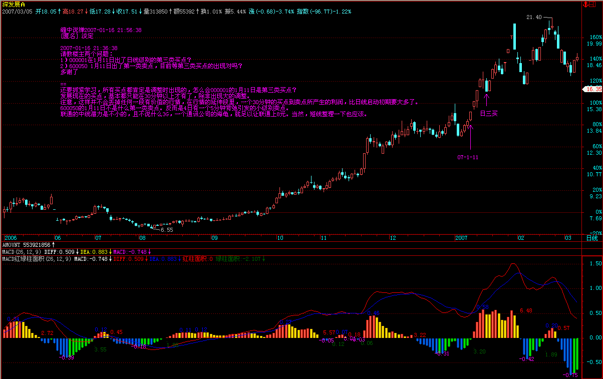
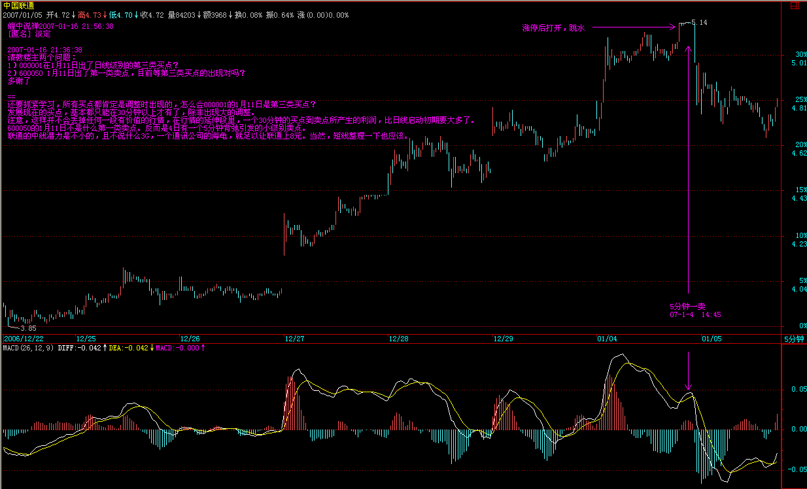
(2007-01-16 21:56:38)
********************
[匿名] 天地 2007-01-16
21:53:18
缠中说禅
2007-01-16 15:37:18
各位注意了
已经N次说过，现在是补涨的天下，二线、特别是低价股横行，选好第三类买点，你会忙得不亦乐乎。本ID教你的是找吃的本事，而不是光把饭给你，各位看看今天涨停的股票，有多少是从第三类买点启动的，就上海的，而且只说低价的，随便说几个：
600608、600555、600784、600684、600300、600829、600587、600820、600884、
各位好好研究一下，就用第三类买点，目前就可以找到足够多的饭吃。自己找到的才是真本事。关键是把这技术练好。
==============================================
600684 的第三类买点我怎么没看出来啊！12日的回调可是在中枢里的。之前的么？怎么看的！是打错了
还是我没看出来？
==
是在周线的中枢里，但在日线的中枢外，而对于日线上的第三类买点，只要一个30分钟级别的回抽不破日线中枢就可以了。有时候不同级别的中枢缠绕在一起，会对判断产生困难，关于这方面的事情，以后会说到。
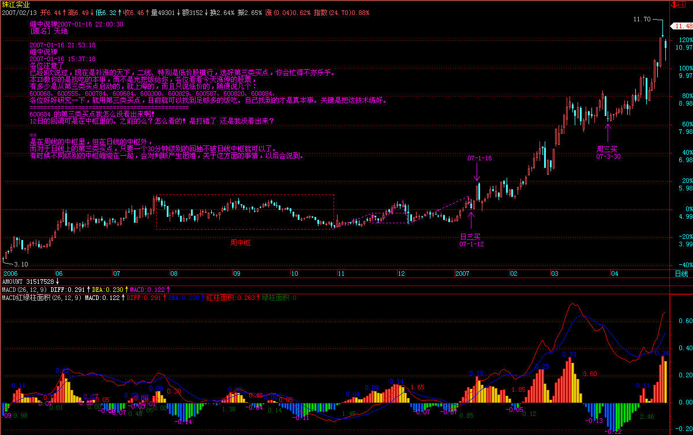
(2007-01-16 22:00:30)
********************
[匿名] 手中无股2007-01-16 21:52:50
lz,对“ccy”的增收计划看得很吸引人，但给个大致的期限好吗？不会是“一万年吧！”（开个玩笑）。
===
你没看清楚？牛市结束前，牛市分三波。现在是牛市的第一波，这个已经说了无数次了。
(2007-01-16 22:01:40)
********************
[匿名] 恒旧常新 2007-01-16
21:14:03
博主似乎一直在用否定一切的语言，劝人放下；却又教我等在股市赚钱的真本事。难不成放下就是为了拿起？放下一切才能拿起一切？如果这是目的，为何不将这目的放下？如果放下这目的，那这人生何意？难道这真是一场游戏？一场不是梦的真实游戏？要的是我们真情实意的投入，玩耍一场，直到游戏结束，各自回家。家在那里？也许一直在家，游戏是在家里玩的。
===
放下、拿起，都是自生分别，本ID这里无如许葛藤。本ID连淫乱都不否定，还否定语言干什么？在这里寻活计是没出路的。偷心不死，永无出途。
(2007-01-16 22:06:17)
********************
[匿名] 插班生 2007-01-16
21:49:29
转贴过来，请楼主指点。
再次学习第三类买点,体会如下,请楼主指点.
例如:
日线的第三类买点,由离开日线中枢(在30分钟线上)的次级别走势类型(由5分钟线确定)回抽不再回到日线中枢的ZG产生,而这个回抽是由日线中枢的次级别(5分钟线上)走势类型来确定.
而要完成该回抽走势类型(5分钟线确定),需要包含2个该回抽走势类型的次级别中枢(在1分钟线上).
所以介入点一定是5分钟线上的回抽走势类型完成后,即产生新的走势(1分钟线上的新中枢).这时才代表回抽走势类型的完成.
----- 走势终完美.
===
没必要，只要在5分钟的第一类买点介入就可以，这关系到背弛的判断问题，以后会继续说。在实际操作中，如果判断不准，就参照一下技术指标，一般这时候，30分钟的MACD有一个回抽0轴的动作，一般都不该跌破。
(2007-01-16 22:09:27)
********************
[匿名] 新年好 2007-01-16
22:08:13
缠姐，请问000767，000800日线上是不是形成了奔走式？
还有啊，缠姐不打算告诉我们什么相当于去年的银行了吗？我想是保险公司，对吗？
==
000767在12月26日是一个标准的第三类买点，没什么奔走的。000800是12月22日，也没有什么奔走。
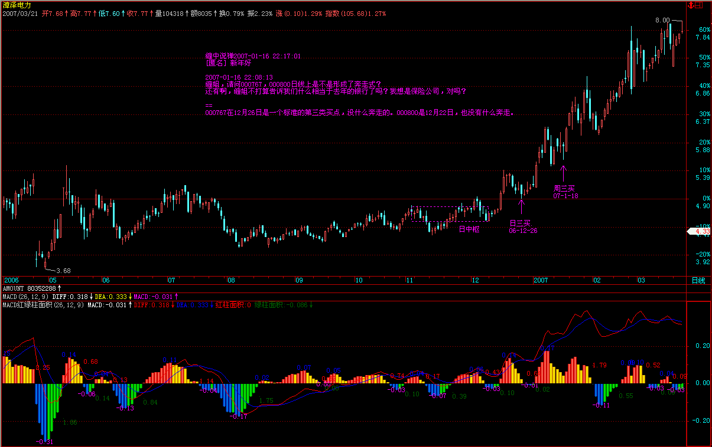
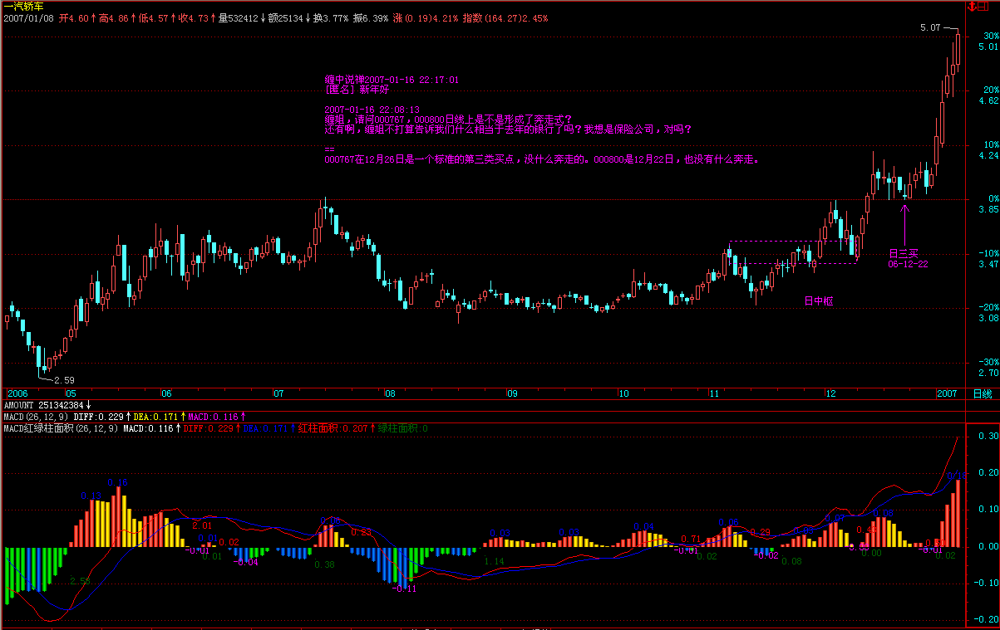
(2007-01-16 22:17:01)
********************
[匿名] 淡定 2007-01-16
22:12:37
多谢楼主！顺便检讨一下，昨天把600555给丢了，郁闷死了，真该好好学习啊
==
为什么？这么标准的第三类买点产生的上扬，怎么都该等到次级别的背弛卖点出来才走。
要养成好习惯，别荡两下就晕了。
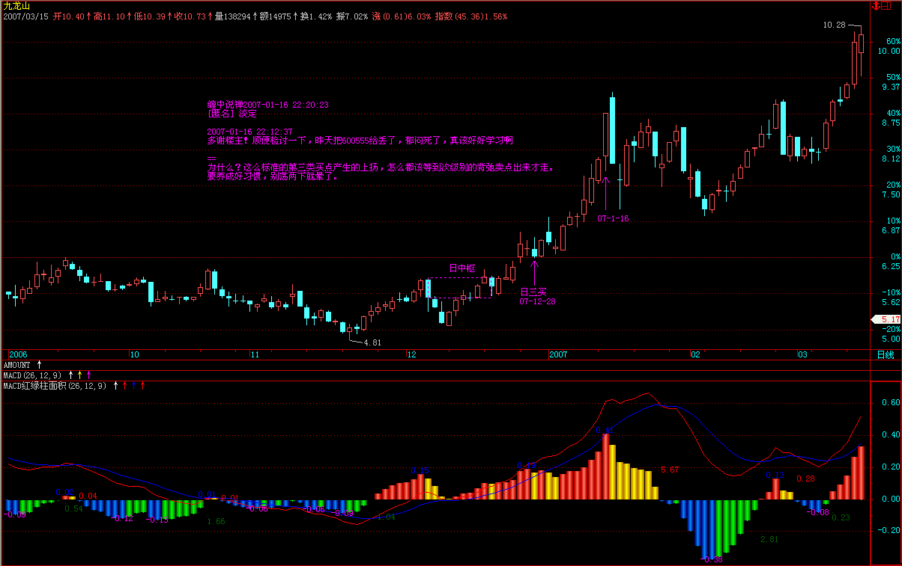
(2007-01-16 22:20:23)
********************
[匿名] 看聊 2007-01-16
22:10:59
让我头痛的背弛啊～～～～～～～～～～～～～～～～～～～～～～～～～～～～～～～～～
==
先把这理解了：
一，两段前后同向趋势间的比较
二、如果用MACD辅助，关键是连接两个趋势的走势类型所产生的回抽0轴过程。其后出现的背驰才是有效的。
更精确的判断，以后再说。
(2007-01-16 22:26:11)
********************
[匿名] 新年好 2007-01-16
22:23:40
000767 000822 的日线在12日到是挺标准的个第三类
000800的日线在12日也算个第三类
**********
000767在12月26日是一个标准的第三类买点，没什么奔走的。000800是12月22日，也没有什么奔走。
=======
缠姐，你的两次回答不太一样啊，难道你说的级别不一样了？
===
先搞清楚上面的回答是谁的。天地是本ID吗？
以后各位引用一定要把名字连上，别连回答人都没搞清楚就引用了。
(2007-01-16 22:32:41)
********************
[匿名] 手中无股 2007-01-16
22:28:45
lz,您提供的600608第三类买点怎么看不出来？
===
是600068，葛洲坝，笔误。各位注意一下。600608今天好象停牌了，怎么可能涨停。
缠中说禅
2007-01-16 15:37:18
各位注意了
已经N次说过，现在是补涨的天下，二线、特别是低价股横行，选好第三类买点，你会忙得不亦乐乎。本ID教你的是找吃的本事，而不是光把饭给你，各位看看今天涨停的股票，有多少是从第三类买点启动的，就上海的，而且只说低价的，随便说几个：
600068、600555、600784、600684、600300、600829、600587、600820、600884、
各位好研究一下，就用第三类买点，目前就可以找到足够多的饭吃。自己找到的才是真本事。关键是把这技术练好。
(2007-01-16 22:39:31)
********************
各位注意了
由于回答的问题众多，出现个把笔误是不可避免的，有发现的请提出来，本ID没时间每个字都看得很清楚。例如上面600068与600608的问题，本ID前面已经有有定义的，就是“各位看看今天涨停的股票，有多少是从第三类买点启动的，就上海的，而且只说低价的，随便说几个”，看看今天的涨停版就知道写错了。所以请各位有什么问题都可以提出来，不要把疑问吃到肚子里。
太晚了，先下，再见。
(2007-01-16 22:44:43)
********************
=====《论语》详解：给所有曲解孔子的人（47） 486e105c0100087e=====
前面已经说过如果出现次次级别的背弛就要走三角形，今天5分钟的背弛如此明显还看不出，那就要去好好补课了。还有人寿在5分钟上也是典型的背弛。
大盘今天的震荡是5分钟的背弛引发的，一个绝好的短差机会，如果没把握好的，继续好好学习。这么典型的走势必须要把握好。没搞清楚的，就把上海和人寿的5分钟图弄出来好好研究。
其实，就算你看不懂大盘，看本ID阻击的股票今早开始就走得特难看，就知道今天要震荡了。当然，本ID的快乐都是建筑在庄家的痛苦之上，这里说声对不起了，傻庄们。
(2007-01-17 15:18:53)
********************
[匿名] 无言2007-01-17 15:18:23
缠姐.这次调整是会以时间换空间,还是以空间换时间?
===
就算真的突破，也需要这样的震荡洗盘，而且深圳昨天有缺口，这也是压力。这种震荡是绝好的短线机会，具体分析看上面。
(2007-01-17 15:22:15)
********************
[匿名] 学习 2007-01-17 15:19:29
LZ，今天大盘在30分钟里算背弛吗？
===
没必须管30分钟，因为突破是日线的次级别走势，也就是30分钟，是否结束，要看5分钟是否背弛。5分钟的背弛太明显了。昨天本ID还特别说过，两段趋势，中间的MACD回抽0轴后背弛，自己去看看，是不是教科书一样精确。
(2007-01-17 15:25:18)
********************
各位
如果对背弛没有什么直观感觉的，好好看看今天的上海大盘以及人寿的5分钟图，标准图形，这里本ID还要对人寿的庄家说声对不起，本ID也弄了他的短差，虽然本ID中线是看好他，但本ID见到背弛就要发狠，没办法，对不起了。
(2007-01-17 15:28:36)
********************
[匿名] 快
2007-01-17 15:26:08
牛市第一阶段结束的标志,数女能否再综合阐述一下?
===
还早着，第一阶段怎么会这么快结束？就算是大级别调整，也是第一阶段的中途调整。第一段走势，走个08年都是正常的。当然，中途调整几个月也是正常的。对于高手来说，调整最好，来回的机会更多，更好玩。调整的钱更好抢。
(2007-01-17 15:31:43)
********************
[匿名] 满目山河
2007-01-17 15:29:00
没错，一直记着LZ说的“可能走三角形”，故而保持较低的仓位。
但是，确实对“背驰”把握不好（几只股票卖得均比较早），还请LZ再详细说说。
===
把今天这两个图好好看，印在脑子里。
(2007-01-17 15:32:42)
********************
[匿名] 无言 2007-01-17 15:18:23
缠姐.这次调整是会以时间换空间,还是以空间换时间?
===
已经调整很多天了，目前可探讨的是调整是否延续的问题。这个在本周，最迟下周一就有答案。但即使调整，个股行情不断，只要没启动的低价股，都有机会。现在指数的意义不是太大。
(2007-01-17 15:35:10)
********************
[匿名] 小菜 2007-01-17 15:27:54
老师 可以帮我分析一下６０００７５吗？ 我不是太懂
===
如果你对ID的理论没搞清楚的，最简单就看均线，中线20天不破就拿着。然后好好研究本ID的理论。
(2007-01-17 15:37:55)
********************
[匿名] 学习 2007-01-17 15:37:34
缠中说禅
2007-01-17 15:25:18
[匿名] 学习
2007-01-17 15:19:29
LZ，今天大盘在30分钟里算背弛吗？
===
没必须管30分钟，因为突破是日线的次级别走势，也就是30分钟，是否结束，要看5分钟是否背弛。5分钟的背弛太明显了。昨天本ID还特别说过，两段趋势，中间的MACD回抽0轴后背弛，自己去看看，是不是教科书一样精确。
--------------------------
两段之间的回抽，大盘是以走势类型完成的，已经看的比较明显了。
是不是中间必须以走势类型进行回抽。我的理解是如果不是以走势类型回抽就够不成两段趋势。这样理解对吗？还是直接回抽将MACD回抽至0，就可以比较了？
===
当然，中间也是一个走势类型，可以明显看出三段来。你看看那两个图，极为标准，教科书一样。
(2007-01-17 15:40:07)
********************
各位如果还不明白，就看看000002的15分钟图，也是一个标准走势，今天这个调整，完全可以提前避开。
(2007-01-17 15:42:33)
********************
[匿名] 悠悠悠哉 2007-01-17
15:38:51
大盘日线图 macd现在也背驰了 是吗？
老大 说啊
======
没有。只是5分钟的，日线要背弛，还需要一个大的回抽0轴的过程。
(2007-01-17 15:44:07)
********************
[匿名] 妄语 2007-01-17
15:41:09
上海大盘的5分钟图的背弛，好象有点牵强，人寿的5分钟图背弛，就简直没看出来。
======
这么标准的图都看不出来，把你对背弛的理解就是完全错误的，至少不是本ID所说的。注意，是趋势之间的比较，而不是红柱之间的比较。
好好去研究，把以前的错误观念改过来。否则永远也学不会。
(2007-01-17 15:47:23)
********************
[匿名] 新年好 2007-01-17
15:45:21
还有啊，缠姐，背驰是回抽0轴产生的，这个回抽是一定跌倒0轴以下才算吗？还是只要接触到就可以了？
===
上下一点都无所谓。关键是分明的两个趋势之间的比较。
注意，背弛了并不是说就跌个没完了，只要次级别再出现买点，就又涨回去，现在关心的就是次级别的下一个买点了。
好好看看万科的15分钟，4日那次也背弛过一次，然后下跌，然后在1分钟出现买点，再次上涨，然后到昨天再次15分钟背弛出现卖点，太教科书了。好好去研究。
(2007-01-17
15:51:20)
*******************
[匿名] 新年好 2007-01-17
15:50:08
缠姐啊，000002除了看出是回抽0轴外，两段走势的macd红柱背驰并不明显啊，是不是只要回抽0轴就会产生背驰？
===
还不明显？左边趋势对应的面积比右边的大那么明显，肉眼都可以看出来。(2007-01-17
15:52:40)
********************
不行了，今晚有饭具，刚才已经打电话来请了，本ID先下，有问题放下来，晚上回来回答。
先下，再见。
(2007-01-17 15:54:33)
********************
刚饭局回来，发现这里太多人对背弛还是一团酱，明天本ID就写一个“MACD对背弛的辅助判断”，大家看文章好好再学习，今天就不对有关背弛的问题再回答了。
大家请多看今天大盘的5分钟图，以及人寿的5分钟图，为明天的学习准备一下。
(2007-01-17 21:23:00)
********************
本ID突然发现，这里也不是完全没有对背弛有点感觉的，你看这位，本ID可以给他戴一个大红花。
[匿名] 勇敢的心 2007-01-17
12:35:49
楼主你好:601628现在30分钟背离了.我下午开盘就出对吗？急盼中......
－－－－－－－－－－－－－
哪里有背驰，看来你没学明白
-1分钟有
[匿名] 过客 2007-01-17 13:08:41
说错了，是5分钟有，很明显的。
(2007-01-17 21:27:25)
********************
各位注意了
为了鼓励大家学习的热情，本ID现在颁发一个大红花给上面叫“过客”的，他在今天13点的留帖，明确说了人寿是5分钟的背弛，证明背弛这东西，还是有人能通过学习在实战中把握的。大家都要向这过客学习，彻底把技术上的疑点弄清楚。
大家注意了，你的学习会有回报的，但前提是，你一定要努力而且彻底把本ID的理论学清楚。
(2007-01-17 21:31:13)
********************
吃饭时喝了不少水井坊，那破酒真难喝，唯一的原因就是肥水不流外人田。
可惜本ID没什么病，想消费一点药都没机会。各位慢慢聊，趁着酒兴，本ID要和李白他们玩玩，就不陪各位了，明天见。